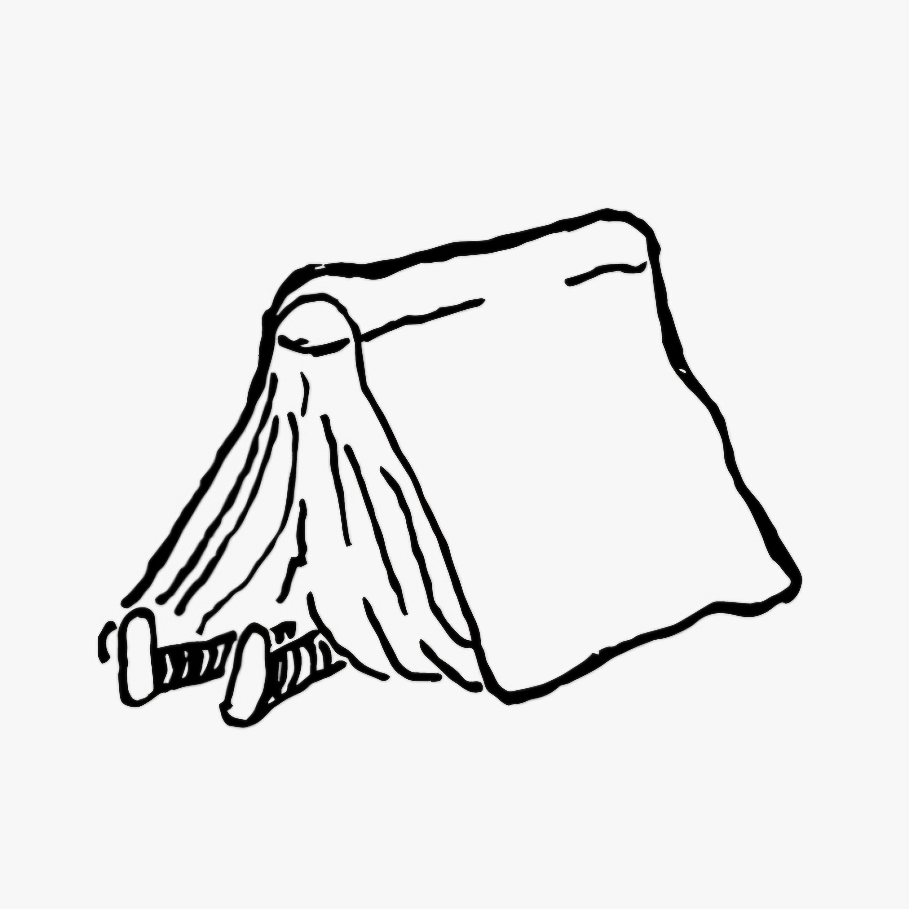

Bienvenido al espacio de resúmenes médicos 100% gratuitos creado para apoyar tu preparación sin barreras económicas.
Para acceder al material de estudio, leer las condiciones del proyecto y enterarte de cómo apoyar esta iniciativa voluntaria, ingresa a nuestro repositorio oficial presionando el botón de abajo.